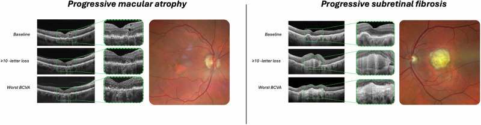
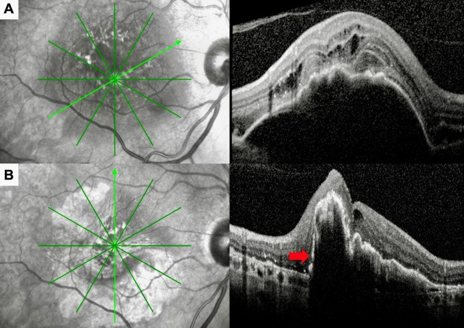

1404 — Biến chứng mạn của tiêm anti-VEGF nội dịch kính / Chronic complications of intravitreal anti-VEGF therapy
Tags: pattern:bien-chung-sau-tiem pattern:teo-hoang-diem pattern:tang-nhan-ap vung:hoang-diem vung:vong-mac protocol:OCT protocol:anti-VEGF score:IOP
Mức chắc chắn (certainty): tổng hợp y văn (literature synthesis) — gộp 4 nghiên cứu mở (PMC13135659, PMC13062072, PMC12886595, PMC13343135); chưa có ca nguyên văn của nhóm.
1. Tổng quan — vì sao tiêm anti-VEGF lặp lại gây hại mạn tính
- Bối cảnh: anti-VEGF nội dịch kính là điều trị chuẩn của nAMD, phù hoàng điểm do đái tháo đường, tắc tĩnh mạch võng mạc, ROP. Mỗi mũi tiêm đưa 0,05 mL vào dịch kính (aflibercept 8 mg: 0,07 mL); bệnh nhân điển hình nhận 6–12 mũi/năm, có người > 50 mũi trong nhiều năm — nên "biến chứng mạn" là bài toán của tổng liều và thời gian, không phải của một mũi đơn lẻ.
- TẠI SAO tăng nhãn áp (IOP) thoáng qua: thể tích tiêm làm tăng thể tích nhãn cầu tức thời; nếu không có trào ngược qua đường vào củng mạc (reflux), IOP có thể > 25 mmHg trong 30 phút đầu, đặc biệt ở mắt ngắn trục (thể tích dịch kính nhỏ), mắt giả thủy tinh thể khác nhau, tiền sử glaucoma, kim cỡ lớn.
- TẠI SAO tăng IOP KÉO DÀI: ba cơ chế cộng lại — (1) tắc lưới bè (trabecular meshwork) bởi giọt dầu silicone (68–78% mắt có giọt silicone trong dịch kính sau tiêm lặp lại) và protein aggregates; (2) tác động trực tiếp lên tế bào lưới bè/Schlemm (thụ thể VEGF có ở đây; ức chế VEGF làm giảm NO và thay đổi tính co của tế bào); (3) giả thuyết "2 đòn": mắt đã có suy dẫn lưu thủy dịch tiềm ẩn thì mới bị tăng IOP kéo dài — giải thích vì sao chỉ một thiểu số bệnh nhân bị. Bằng chứng dịch tễ: bệnh nhân nhận ≥ 7 mũi/năm có tỷ lệ phẫu thuật dẫn lưu glaucoma cao hơn (nghiên cứu dân số Canada).
- TẠI SAO teo hoàng điểm (macular atrophy, MA): ức chế VEGF kéo dài làm giảm tưới máu hắc mạc (choriocapillaris) và mất dần RPE/tế bào cảm thụ; tổn thương tích lũy theo số mũi tiêm và thời gian theo dõi. Số liệu dài hạn: tỷ lệ MA tích lũy 79,8% sau 10 năm (148 mắt, phác đồ PRN); ở nhóm "đáp ứng kém" (70 mắt, ≥ 7 mũi năm đầu, giảm ≥ 10 chữ ETDRS): MA 7,1% → 41,4% → 81,4% tại 3 thời điểm, xơ dưới võng mạc 11,4% → 25,7% → 57,1%; 20–30% bệnh nhân nAMD có suy giảm thị lực tiến triển dù hình thái ổn định. Hệ quả: mắt có MA giảm thị lực nhanh hơn (−1,96 so với −1,42 chữ/năm).
- TẠI SAO rách RPE (RPE tear): khi bong biểu mô sắc tố (PED) cao và căng, anti-VEGF làm CNV co lại → lực kéo ngang xé RPE. Nguy cơ 1,9–7%, cao nhất khi PED > 400 µm, PED lớn, PED có mạch máu; thường xảy ra sau mũi đầu hoặc trong tháng đầu.
- TẠI SAO viêm/xơ hóa mạn: phản ứng miễn dịch với thuốc, tá dược, giọt silicone và protein aggregates → viêm nội nhãn vô khuẩn 0,02–0,37%, hiếm khi viêm mạch võng mạc tắc nghẽn; đồng thời quá trình xơ hóa dưới võng mạc tiến triển độc lập với kiểm soát dịch.
- Ngưỡng định lượng cần nhớ: endophthalmitis nhiễm khuẩn 0,02–0,05%/mũi; bong võng mạc ~0,01%; đục thủy tinh thể do chạm kim ~0,006%; tắc mạch võng mạc rất hiếm; viêm nội nhãn vô khuẩn 0,02–0,37%; rách RPE 1,9–7%; MA 79,8%/10 năm.
2. Mẫu hình + chẩn đoán phân biệt theo trục thời gian và cấu trúc
- Phút 0–30 (cấp, sau mỗi mũi): tăng IOP thoáng qua (thể tích, reflux), bong hắc mạc thoáng qua, xuất huyết dưới kết mạc.
- Ngày 1–7 (cấp): endophthalmitis nhiễm khuẩn (đau, giảm thị lực, hypopyon), viêm nội nhãn vô khuẩn (khởi phát 1–3 ngày, đáp ứng corticoid), rách võng mạc/bong võng mạc.
- Tuần 2–8 (bán cấp): viêm màng bồ đào do thuốc, rách RPE (sau mũi 1–2), viêm mạch võng mạc tắc nghẽn (thuốc thế hệ mới).
- Tháng 3–24 (muộn sớm): tăng IOP kéo dài/glaucoma, MA/teo địa lý, xơ dưới võng mạc, đục thủy tinh thể tiến triển, đáp ứng giảm dần (tachyphylaxis/tolerance).
- > 24 tháng (muộn): MA lan vào hoàng điểm, teo hắc mạc, glaucoma cần phẫu thuật, giảm thị lực không hồi phục dù kiểm soát CNV.
- Gamut "IOP tăng sau tiêm": thể tích tiêm (0,05–0,07 mL) · reflux kém · giọt silicone/protein · glaucoma có sẵn · corticoid phối hợp (nếu dùng) · góc hẹp/mắt ngắn trục.
- Gamut "teo hoàng điểm mới": MA do anti-VEGF · tiến triển teo địa lý · rách RPE · teo tại chỗ tiêm · thoái triển PCV/polyp.
- Gamut "không đáp ứng dù tiêm đều": tachyphylaxis · CNV hoạt động dai dẳng · chẩn đoán sai (PNV/PCV) · xơ hóa không hồi phục · MA thay thế võng mạc lành.
3. Bảng so sánh phân biệt (ma trận đối chiếu)
| Thực thể (entity) | Hình ảnh điển hình | Chốt vào (rule-in) | Chốt loại (rule-out) | Gợi ý xác nhận |
|---|---|---|---|---|
| Tăng IOP thoáng qua | Đo IOP > 25 mmHg trong 30 phút, có thể phù giác mạc nhẹ, tự hết | Đo ngay sau tiêm + tự về bình thường trong vài giờ | IOP tăng và không giảm sau 1 tuần → tăng kéo dài | Đo lại 30 phút và 1 tuần; kiểm tra reflux |
| Tăng IOP kéo dài/glaucoma | IOP ≥ 22 mmHg nhiều lần, RNFL mỏng dần, ONH lõm | IOP tăng ≥ 3 lần đo + tổn thương RNFL/thị trường | IOP về bình thường, RNFL ổn định → loại | Thị trường 24-2, OCT RNFL, gonioscopy; ≥ 7 mũi/năm là yếu tố nguy cơ |
| Teo hoàng điểm do anti-VEGF | OCT: mỏng RPE + mất EZ/ELM, tăng phản âm mờ; FAF: giảm huỳnh quang; không dịch | Mất EZ/RPE tiến triển theo thời gian + không có dịch/không ngấm | Có dịch dưới võng mạc + ngấm hoạt động → CNV đang hoạt động | OCT + FAF mỗi 3–6 tháng; đo diện tích mm² |
| Xơ dưới võng mạc | OCT: mô tăng phản âm dưới võng mạc, co kéo, mất ranh giới lớp; ảnh màu: mảng trắng xám | Mô xơ + co kéo + mất EZ | Chỉ dày RPE không co kéo → không phải xơ | OCT B-scan, theo dõi 3 tháng |
| Rách RPE | OCT: bờ RPE gấp/cuộn (rolled edge), vùng RPE mất, PED xẹp đột ngột; ảnh màu: mảng sẫm bờ rõ | PED > 400 µm + mất RPE đột ngột sau tiêm + bờ cuộn | RPE còn liên tục, PED giảm dần → không rách | OCT + FAF; so ảnh ngay trước tiêm |
| Viêm nội nhãn vô khuẩn | Tế bào tiền phòng/vitritis, có thể phù hoàng điểm, không hypopyon lớn | Khởi phát 1–3 ngày + đáp ứng corticoid trong 1–2 tuần + cấy âm | Hypopyon/fibrin + đau dữ + cấy dương → endophthalmitis | SUN grading; cấy dịch kính trước khi tiêm |
| Endophthalmitis nhiễm khuẩn | Đục dịch kính, hypopyon/fibrin, không đọc được OCT | Đau + giảm thị lực 1–7 ngày + hypopyon | Không đau, chỉ tăng IOP thoáng qua → loại | Chọc dịch kính + cấy + kháng sinh nội dịch kính |
| Tachyphylaxis/đáp ứng kém | OCT: dịch dai dẳng hoặc tái phát nhanh dù khoảng tiêm ngắn; CRT không giảm | Cần rút ngắn khoảng tiêm liên tục + vẫn còn dịch | Dịch đã hết, thị lực giảm do MA/xơ → không phải tachyphylaxis | OCT mỗi lần tiêm; xem lại chẩn đoán (PNV/PCV) |

Hai kiểu thoái triển cấu trúc ở bệnh nhân "đáp ứng kém" (≥ 7 mũi năm đầu, giảm ≥ 10 chữ ETDRS): trái — teo hoàng điểm tiến triển (mất dần lớp võng mạc ngoài, OCT + ảnh màu); phải — xơ dưới võng mạc tiến triển (mảng xơ trắng, co kéo). Cả hai đều tiếp tục xấu dù kiểm soát dịch. Nguồn: Lolli I et al., Eye (Lond) 2026, PMC13062072 Fig. 2, CC BY 4.0.
Trước (A) và sau (B) mũi ranibizumab thứ hai: PED cao căng, dịch dưới võng mạc; sau tiêm PED xẹp đột ngột, bờ RPE cuộn lên (mũi tên đỏ) = rách RPE. Nguy cơ tăng khi PED > 400 µm. Nguồn: Koksaldi S et al., Med Hypothesis Discov Innov Ophthalmol 2026, PMC13135659 Fig. 4, CC BY-NC 4.0 — nguyên bản, không crop/ghép.4. Protocol theo dõi + xử trí
- Trước mỗi mũi tiêm: đo IOP nền; hỏi tiền sử glaucoma; với mắt ngắn trục/glaucoma, đo IOP 30 phút sau tiêm; kiểm tra reflux (nếu không có reflux → nguy cơ tăng IOP cao hơn).
- Theo dõi định kỳ: IOP mỗi lần thăm khám; OCT hoàng điểm mỗi 1–3 tháng (tùy phác đồ treat-and-extend); FAF + OCT mỗi 3–6 tháng khi nghi MA; thị trường 24-2 + OCT RNFL nếu IOP tăng kéo dài hoặc ≥ 7 mũi/năm.
- Ngưỡng hành động:
- IOP > 25 mmHg sau tiêm mà không tự giảm → nhỏ thuốc hạ nhãn áp, hẹn đo lại.
- IOP ≥ 22 mmHg ở ≥ 3 lần đo hoặc tăng ≥ 5 mmHg so nền → điều trị glaucoma, gonioscopy, cân nhắc giảm tần suất tiêm/đổi thuốc.
- MA mới trên OCT/FAF → không tiêm chỉ vì MA; giảm tần suất nếu không còn dịch, theo dõi sát.
- PED > 400 µm → cảnh báo nguy cơ rách RPE, chụp OCT ngay sau mũi đầu.
- Xử trí biến chứng: rách RPE — tiếp tục anti-VEGF nếu CNV còn hoạt động (ổn định thị lực), không có bằng chứng cải thiện thị lực; glaucoma — thuốc → laser (SLT) → phẫu thuật lọc; viêm vô khuẩn — corticoid tại chỗ/toàn thân; endophthalmitis — chọc dịch kính + kháng sinh (xem bài 481).
- Phòng ngừa: kỹ thuật tiêm chuẩn (tránh chạm thể thủy tinh), kim nhỏ/đúng cỡ, kiểm tra reflux, tránh tiêm quá nhanh, dùng bơm tiêm không silicone/lọc thuốc khi có thể (giảm tăng IOP sau tiêm).
flowchart TD
A[IOP tăng sau tiêm anti-VEGF] --> B{Tự giảm trong vài giờ?}
B -->|Có| C[Tăng thoáng qua - theo dõi]
B -->|Không| D[Đo lại 1 tuần + gonioscopy]
D --> E{IOP >= 22 mmHg ba lần hoặc tang >= 5 mmHg?}
E -->|Không| C
E -->|Có| F[Thuốc hạ nhãn áp + OCT RNFL + thị trường]
F --> G{Có tổn thương RNFL/thị trường?}
G -->|Có| H[Glaucoma - SLT hoặc phẫu thuật lọc]
G -->|Không| I[Giảm tần suất tiêm - đổi thuốc - theo dõi]
- Lịch theo dõi gợi ý sau nhiều năm tiêm: mỗi 3–6 tháng đánh giá đồng thời hoạt động CNV (OCT) + MA (FAF/OCT) + IOP/RNFL — vì ba quá trình này tiến triển độc lập và quyết định khác nhau (tiêm tiếp, giảm liều, hay điều trị glaucoma).
5. Biến thể bình thường và cạm bẫy
- Biến thể bình thường: IOP tăng nhẹ thoáng qua sau tiêm là sinh lý (thể tích 0,05 mL) — không gọi là glaucoma; giọt silicone lơ lửng trong dịch kính gây ruồi bay, không phải viêm.
- Cạm bẫy 1 — điều trị "teo" bằng cách tiêm tiếp: MA không có dịch, không ngấm → không có chỉ định anti-VEGF; tiêm thêm chỉ làm teo nhanh hơn. Nhưng nếu còn dịch/ngấm thì vẫn phải điều trị CNV.
- Cạm bẫy 2 — bỏ sót tăng IOP vì chỉ đo IOP lúc khám định kỳ: đỉnh IOP xảy ra 30 phút sau tiêm, không phải lúc khám; mắt ngắn trục/glaucoma cần đo đúng thời điểm.
- Cạm bẫy 3 — nhầm rách RPE với "PED xẹp tốt": PED xẹp đột ngột kèm bờ RPE cuộn và mảng sẫm trên ảnh màu = rách, tiên lượng thị lực xấu; đừng ghi nhận là "đáp ứng tốt".
- Cạm bẫy 4 — viêm vô khuẩn vs endophthalmitis: tần suất 0,02–0,37% so với 0,02–0,05%, nhưng viêm vô khuẩn không hypopyon lớn, đáp ứng corticoid; tiêm kháng sinh mù quáng vào mắt viêm vô khuẩn gây hại thêm.
- Cạm bẫy 5 — tachyphylaxis giả: "không đáp ứng" có thể do chẩn đoán sai (PNV/PCV thay vì nAMD) hoặc do xơ/teo đã thay thế võng mạc — đổi thuốc không giúp.
- Cạm bẫy 6 — thỏa mãn tìm kiếm: thấy CNV khô và hết dịch là dừng theo dõi, bỏ sót glaucoma do tiêm và MA lan vào hoàng điểm — hai nguyên nhân giảm thị lực muộn hàng đầu.
6. Tự lượng giá — Blind Quiz
Ca 1 — Bệnh nhân nAMD, 4 năm tiêm đều, thị lực giảm dần 6 tháng dù OCT "không còn dịch".
- Gợi ý: ≥ 7 mũi/năm; không đau, không đỏ mắt.
- Câu hỏi: Hai kiểu thoái triển cấu trúc trên hình là gì? Có nên tăng tần suất tiêm? Dấu hiệu nào trên OCT quyết định?
Bấm để hiện đáp án (findings + chẩn đoán)
- Dấu hiệu: trái = teo hoàng điểm tiến triển (mất lớp võng mạc ngoài, mỏng RPE, không dịch); phải = xơ dưới võng mạc (mô tăng phản âm co kéo).
- Chẩn đoán: biến chứng mạn do anti-VEGF — không phải CNV hoạt động.
- Xử trí: không tăng tần suất tiêm; giảm tần suất/theo dõi FAF-OCT; tiêm chỉ khi có dịch/ngấm hoạt động.
- Số liệu: MA 7,1% → 41,4% → 81,4%, xơ 11,4% → 25,7% → 57,1% trong nhóm đáp ứng kém; MA làm giảm thị lực −1,96 vs −1,42 chữ/năm.
- Nguồn: Lolli I et al., Eye (Lond) 2026, PMC13062072 Fig. 2, CC BY 4.0.
Ca 2 — PED cao, sau mũi anti-VEGF thứ hai đột ngột nhìn mờ, OCT có bờ RPE cuộn.
- Câu hỏi: Dấu hiệu chốt trên OCT? Yếu tố nguy cơ nào cần đo trước tiêm? Tiên lượng và hướng xử trí?
Bấm để hiện đáp án (findings + chẩn đoán)
- Dấu hiệu: PED cao căng trước tiêm; sau tiêm PED xẹp, bờ RPE cuộn (mũi tên đỏ), vùng mất RPE = rách RPE.
- Nguy cơ: PED > 400 µm, PED lớn/có mạch máu; thường sau mũi đầu/tháng đầu.
- Tiên lượng: thị lực thường xấu đi; tiếp tục anti-VEGF nếu CNV còn hoạt động nhưng không cải thiện thị lực.
- Tần suất: rách RPE 1,9–7%.
- Nguồn: Koksaldi S et al., Med Hypothesis Discov Innov Ophthalmol 2026, PMC13135659 Fig. 4, CC BY-NC 4.0 (nguyên bản).
Bài liên quan chéo
- 400 – Tổng quan Mắt & thị giác
- 481 – Biến chứng nội nhãn sau liệu pháp gene & tiêm nội dịch kính
- 482 – Tân mạch hắc mạc sau CSCR mạn (PNV): chọn anti-VEGF/PDT
- 442 – Glaucoma trên OCT
- 444 – Tắc mạch võng mạc
Ảnh
images/1404_bien-chung-man-anti-vegf_OCT_PMC13062072.jpg— OCT + ảnh màu, PMC13062072 Fig. 2, CC BY 4.0.images/1404_anti-vegf_RPE-tear_OCT_PMC13135659.jpg— OCT trước/sau rách RPE, PMC13135659 Fig. 4, CC BY-NC 4.0 (nguyên bản).- Nguồn + giấy phép chi tiết:
images/CREDITS.md.
Không dùng để chẩn đoán độc lập khi chưa có người hướng dẫn.